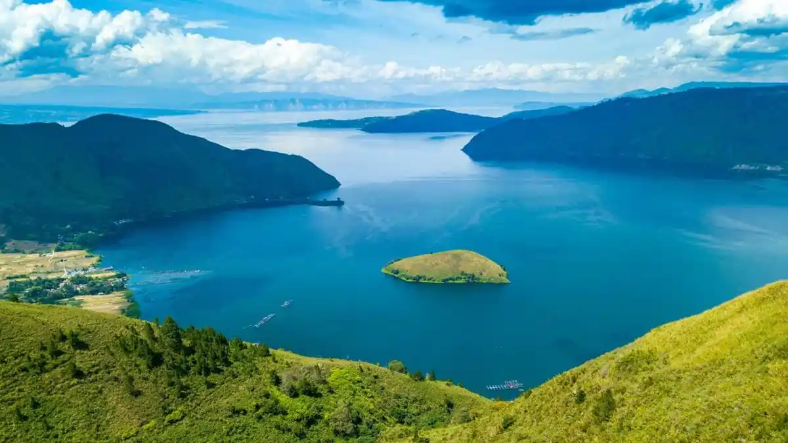
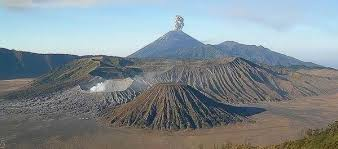
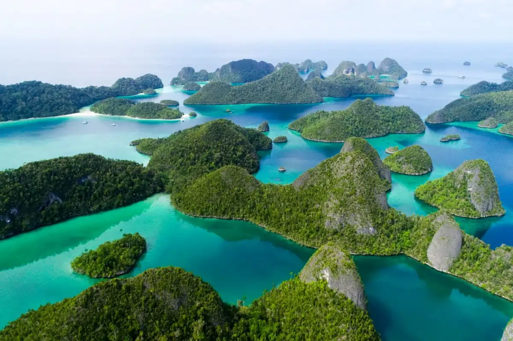

1. Danau Toba

Danau Toba adalah danau vulkanik terbesar di dunia dan di Indonesia, terletak di Sumatera Utara, terbentuk dari letusan supervulkan dahsyat. Danau ini menjadi destinasi wisata utama yang menawarkan keindahan alam, budaya Batak, dan Pulau Samosir.
2. Gunung Bromo

Gunung Bromo adalah gunung berapi aktif terkenal di Jawa Timur, terletak di Taman Nasional Bromo Tengger Semeru (TNBTS), mencakup Probolinggo, Pasuruan, Malang, dan Lumajang. Destinasi ini ikonik dengan sunrise spektakuler, kawah aktif, lautan pasir, dan budaya Suku Tengger.
3. Raja Ampat

Raja Ampat, terletak di Papua Barat Daya, adalah destinasi wisata bahari kelas dunia yang terkenal dengan julukan "surga terakhir" atau "permata tersembunyi" karena keanekaragaman hayati laut tertinggi di dunia.